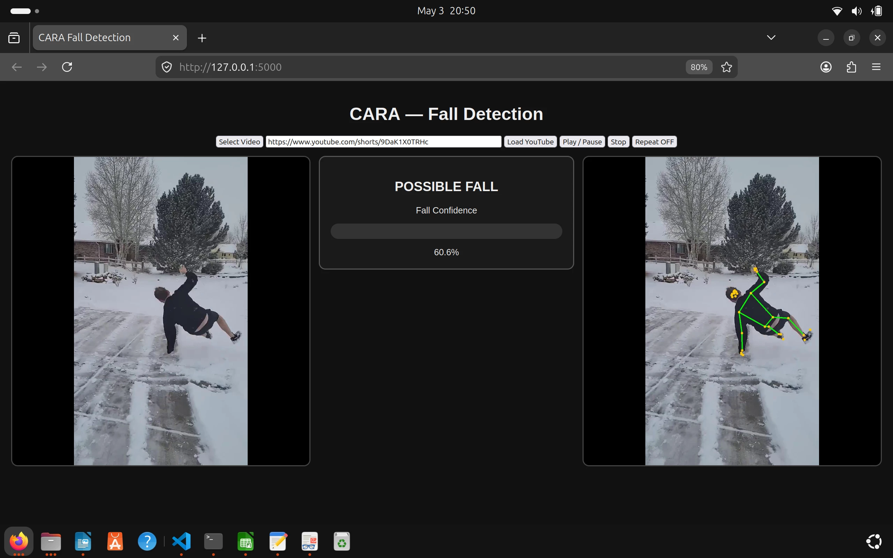
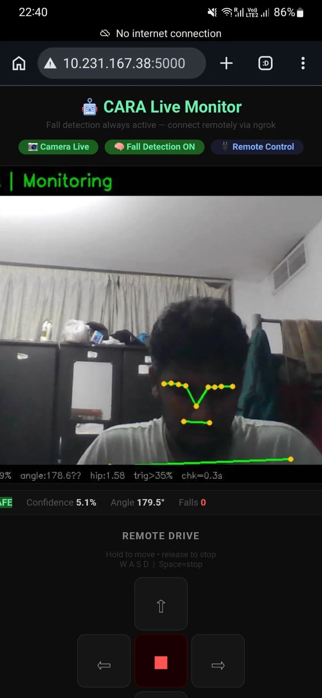
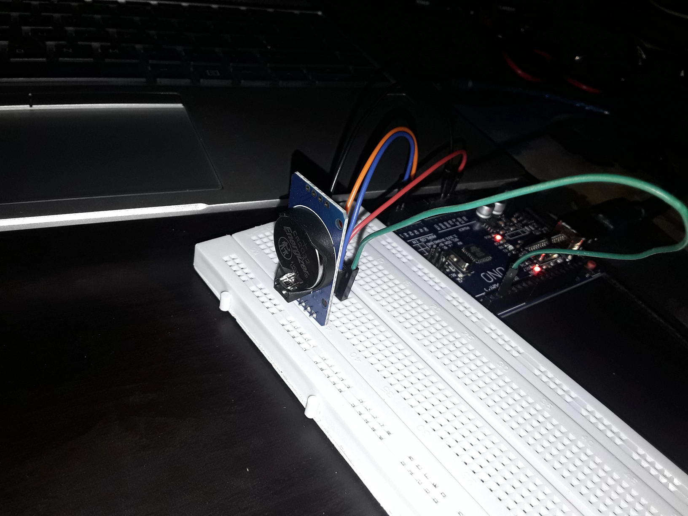
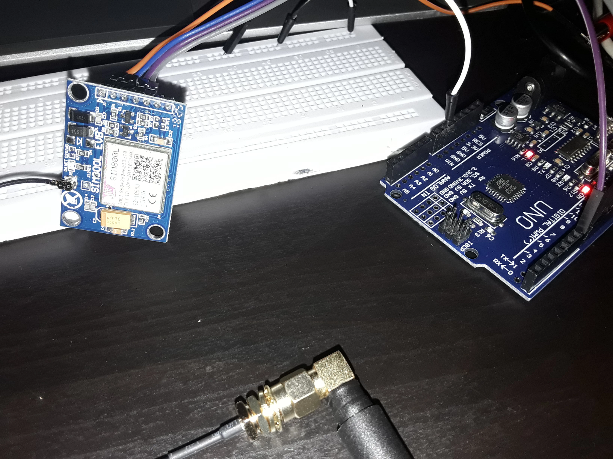
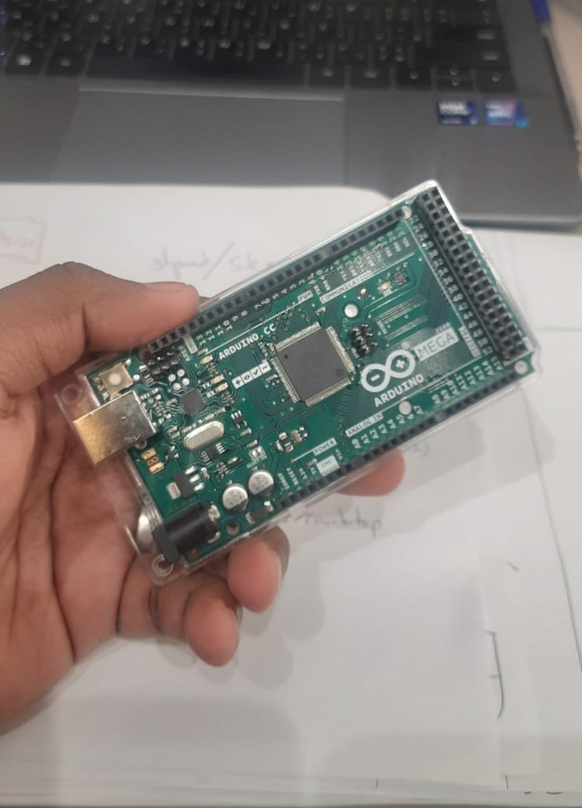

Fall Detection on Laptop — Jetson Nano Needs SD Card
The Jetson Nano board is physically on hand, but an SD card is needed to install the OS and set it up — so development continued on a laptop for now. This does not block progress at all: the Python code, MediaPipe logic, and the Arduino serial handshake are identical regardless of which device runs them. The laptop is the interim development environment. All final testing will be done on the Jetson Nano once the SD card arrives.
Setup steps:
| Step | Detail |
|---|---|
| Python virtual environment | Created and activated — isolated from system Python |
| MediaPipe + OpenCV installed | Standard pip install — no source build needed on laptop |
| Initial test | test_fall_detection.py — tested via images first before video |
| Video test | Fall detection processing pre-recorded video files frame by frame |
Fall Detection Results — 60.6% Confidence Shown
The fall detection logic uses MediaPipe Pose to track hip and shoulder landmark positions. When the hip Y-coordinate approaches the shoulder Y-coordinate (person becomes horizontal), the fall condition triggers. The confidence threshold for a fall alert is set at 70%.
Testing on a video of a person slipping on snow showed the system detecting the event with 60.6% confidence. The UI showed "POSSIBLE FALL" at this level — below the 70% threshold so no alert was sent, but the detection and UI were working correctly.

When confidence exceeds 70%, the system sends "fall_detected" over the Arduino serial connection. The Arduino immediately transitions to ALERT state: buzzer activates, LED on, motors locked, LCD shows alert. The full chain was verified end-to-end using a video file as input.
Live testing skipped this session — I work night shifts, and the room was too dark for the camera. Live detection will be tested on a day off with proper lighting. The video file pipeline confirms the logic is correct.
Flask Web UI — Tested on Mobile
A web interface was built using Flask, running on port 5000. The UI provides remote access from any device on the same local network — no app install, just a browser.
Features live in the first version:
- Camera live status indicator
- Fall detection ON/OFF status
- Live camera feed with MediaPipe pose overlay
- Remote drive control (forward, backward, left, right, stop)
- Current robot state display

The UI was tested successfully on a mobile phone on the same Wi-Fi network. Camera feed was live, fall detection status updated correctly, and remote control commands reached the Arduino. Next step is testing access via ngrok to allow remote connection from outside the local network.
SolidWorks 3D Design — Full Prototype Finalised
The 3D mechanical design was completed in SolidWorks this week. Starting from a 20×30cm base with extra space for component mounting, the design progressed through several iterations:
| Design stage | What was done |
|---|---|
| Base design | 20×30cm plate with mounting holes for Arduino, motor driver, sensors |
| Camera head mechanism | Servo motor + gear drive for pan/tilt — gears simplified for first prototype |
| Camera decision | Logitech C270 (available from uni's previous coursework kit) |
| Camera tower | Central vertical tower completed — pan and tilt servos integrated |
| Sensor mounting | HC-SR04, PIR, RFID readers — positions verified against base dimensions |
| Full prototype | All components modelled, renders produced from multiple angles |


3D printing at the university was investigated for the base and camera housing. GrabCAD sample parts were used as reference for the wheel and motor mounts to avoid designing everything from scratch.
RTC Module — Tested and Working
The DS3231 Real Time Clock module was tested on a breadboard with Arduino UNO. The module keeps accurate time independently of the microcontroller — this is the timekeeping source for the medication reminder schedule. Once set, the DS3231 maintains time even if the Arduino loses power.

SIM800L GSM — 2G Not Supported in UAE
GSM testing started with a SIM800L module — a compact, low-cost 2G GSM module. Testing was done with a company SIM card (Du network, UAE) using a bench power supply.
| Test | Observation |
|---|---|
| Initial power-on with Du SIM | No signal, voltage drop, no network registration |
| Bench PSU at 4V / 2A | Module responds to AT commands — power supply not the issue |
| Changed SIM to UAE local number | Some signal detected briefly |
| Increased voltage to 4.5V | Module reading 3.9V. Still no sustained signal. |
| Signal check after extended wait | Consistently failing to register on network |

Root cause found — 2G decommissioned in UAE: The SIM800L is a 2G-only module. Du and Etisalat (the UAE's two main mobile networks) have decommissioned their 2G networks. A 2G module physically cannot register on a network that no longer broadcasts 2G signals. This is not a power issue or a wiring issue — the module is working correctly; there is simply no 2G network for it to connect to.
This explains every symptom: the AT command responses were fine (module hardware is working), but network registration always failed regardless of SIM card, voltage, or antenna position — because no 2G cell is broadcasting in range.
Solution — SIM7600 (4G/LTE) Ordered
The SIM800L cannot be used in the UAE. Ordered to replace it:
| Component | Reason |
|---|---|
| SIM7600 GSM module (4G/LTE) | Replaces SIM800L — supports LTE networks used by Du/Etisalat in UAE |
| 1000µF ≥6V capacitor | Buffer for GSM TX current spikes to prevent voltage droop on power rail |
Hardware implementation is on hold until these components arrive. The SIM7600 supports LTE (4G), which is the current UAE network standard — it will register on Du and Etisalat networks without any workaround.
Arduino Mega Arrives
The Arduino Mega ordered back in Week 03 — while waiting on the DIY kit's replacement motors — arrived this week. It replaces the UNO for the next round of integration: enough digital and analog pins to run the motors, HC-SR04, PIR, LCD, buzzer, and LED alongside the RFID, GSM, and RTC modules being added now, all at once.

Every Component Staged Together
With the SolidWorks design finalized and the RTC and GSM modules tested individually, everything built and ordered so far — chassis, Arduino Mega, sensors, RTC, GSM module, camera — was laid out together to check fit against the SolidWorks base before the SIM7600 and capacitor arrive.
.jpeg)
.jpeg)
.jpeg)
.jpeg)
What Did Not Go Well
The SIM800L was ordered without confirming whether 2G is still active in the deployment region. This is a pre-procurement check that should have happened during architecture week. Before ordering any wireless module, confirm the network generation it supports against what is available at the test location. In the UAE, only 3G and 4G/LTE are active.
Live fall detection testing was also blocked by lighting conditions (working night shifts). This will be picked up in the next session with proper daytime lighting.
Week 04 Checklist
| Python venv created, fall detection code working on laptop | ✓ Complete |
| Fall detection tested via video — 60.6% confidence shown | ✓ Complete |
| Arduino serial link confirmed (fall_detected → Alert state) | ✓ Complete |
| Flask web UI built — camera, fall status, remote drive | ✓ Complete |
| Mobile UI tested on same local network (port 5000) | ✓ Complete |
| SolidWorks base design (20×30cm) completed | ✓ Complete |
| Camera tower and servo-gear mechanism designed | ✓ Complete |
| Full prototype hardware design finalized (multiple SolidWorks renders) | ✓ Complete |
| Logitech C270 camera confirmed (from uni kit) | ✓ Complete |
| DS3231 RTC module tested and working | ✓ Complete |
| SIM800L root cause identified — 2G not active in UAE | ✓ Complete |
| SIM7600 (4G) + 1000µF cap ordered | ✓ Complete |
| Arduino Mega received — replaces UNO for RFID/GSM/RTC integration | ✓ Complete |
| All components staged together for a fit check against the SolidWorks base | ✓ Complete |
| Hardware implementation on hold — awaiting delivery | ⏳ Pending |